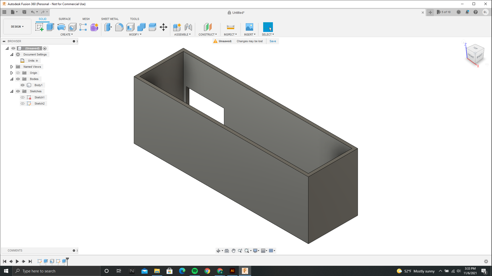
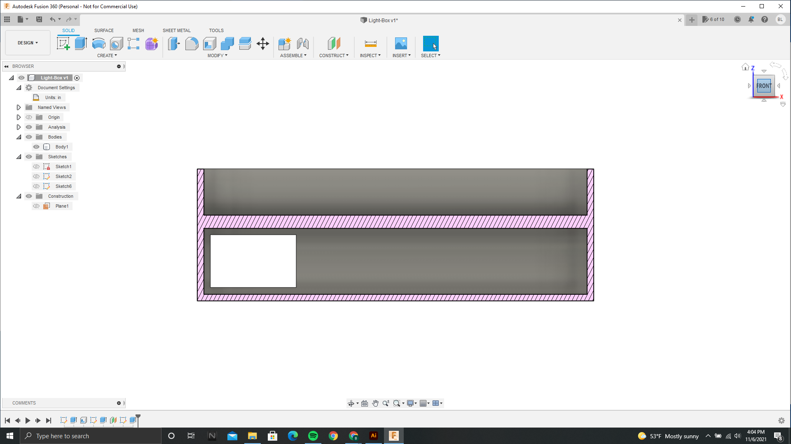
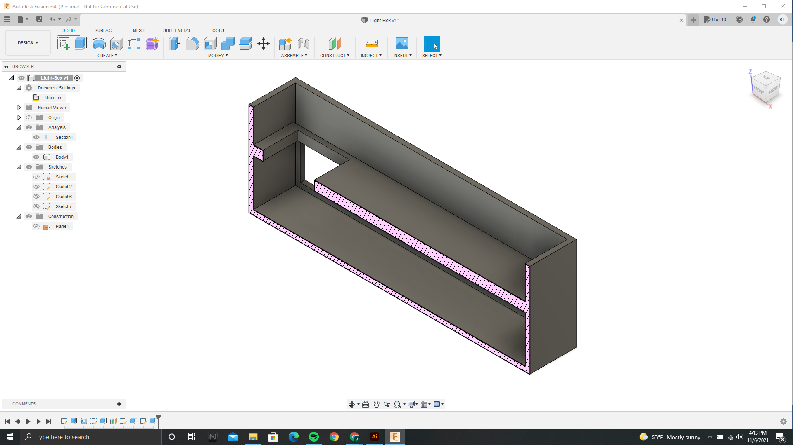

Box Design
This proved to be much more challenging than the design of the arcylic. I knew the basic outline of what I needed to have, but creating a design that would work from scratch proved to be challenging. After lots of trial and error, along with many, many measurement changes. I had a design I was convinced would work. I had started with a basic box with a hole in the side. I then added a second "shelf" to help keep the light piece and electronics secured. I was very happy with the design and thought for sure it would work. However, when the print was complete, the box was the slightest bit too small for the wodden pieces to fit correctly.

First design of box

Second layer

Orignal final design